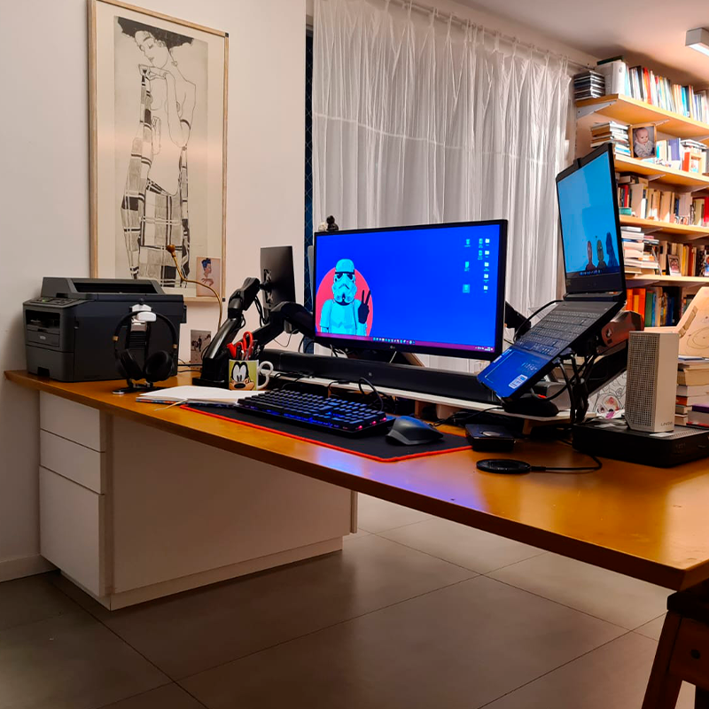
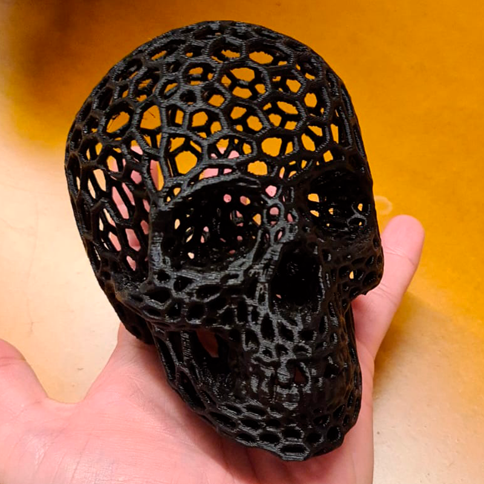

Marcenaria
Meu avô materno era uma pessoa super habilidosa. Me recordo dele consertando gavetas de armários e fazendo brinquedos para a gente, como carrinhos ou casinhas de boneca. Lembro do cheiro da madeira e do seu armário de ferramentas eu nunca vou me esquecer. Outra pessoa que me inspirou a trabalhar com madeira foi o amigo do meu pai apelidado de Taboca, que é marceneiro. Juntos, ele e meu pai inventaram alguns dos brinquedos mais legais que tive.
Nas fotos abaixo mostro um pouquinho das peças que já fiz. Um banco para a entrada de casa, onde nos sentamos para (des)calçar os sapatos. O que mais gosto nesse projeto é que utilizei a madeira que recuperei dos batentes das porta quando reformei o apartamento. A segunda peça também fica na entrada do apartamento e foi pensada para acomodar as coisas que levamos para a rua, como chaves e bolsas. E a última é uma escrivaninha. Ela tem mais de 2 metros de comprimento e é usada dos dois lados, por mim e pela minha esposa, de forma que podemos nos ver enquanto trabalhamos no computador.
 Banco do hall do apartamento
Banco do hall do apartamento
 Porta chaves e bolsas no hall do apartamento.
Porta chaves e bolsas no hall do apartamento.

Escrivaninha para duas pessoas.
Fotografia
Só se vive uma vez, certo? Eu adoro viajar e conhecer coisas novas, pessoas novas, lugares novos. Mas me parece que as lembranças vão indo embora um pouco de cada vez, né?
Eu comecei a fotografar incentivado por um amigo do trabalho, para me inscrever em concursos fotográficos. Daí virou paixão e hoje fotografo para me lembrar dos lugares lindos que já visitei.
(Curiosidade: você sabia que as araras formam casais para se reproduzir e depois nunca mais se separam? Quando uma morre a outra vive solitária até o fim da sua vida. Fonte) Aqui a Fonte)
 Arara Azul - Nobres - MT.
Arara Azul - Nobres - MT.
 Casal de Araras Vermelhas - Belem - PA
Casal de Araras Vermelhas - Belem - PA
 Pássaro Preto - São Paulo - SP.
Pássaro Preto - São Paulo - SP.
 Lagoa - Rio de Janeiro - RJ.
Lagoa - Rio de Janeiro - RJ.
DIY e Impressão 3D
Várias pessoas, em diversos momentos, já me questionaram sobre o motivo de eu gostar tanto da engenharia. E a resposta vai ser sempre a mesma: porque me ensinou que posso fazer qualquer coisa.
Minha cabeça vive cheia de ideias. Estou sempre inventando alguma coisa, seja para a casa ou só por diversão. Sou apaixonado por criar coisas . Eu já fiz mesa de jantar, várias facas, uma luminária que se liga pela internet e esculturas de plástico, impressas e de sucata. Também me divirto programando bots aleatórios ou filtros para minhas fotos e vídeos. Coisa de maluco mesmo!

Cranio em estilo voronoy. Impresso em PLA.
 Mesa de jantar com oito lugares.
Mesa de jantar com oito lugares.
 Luminária inteligente.
Luminária inteligente.